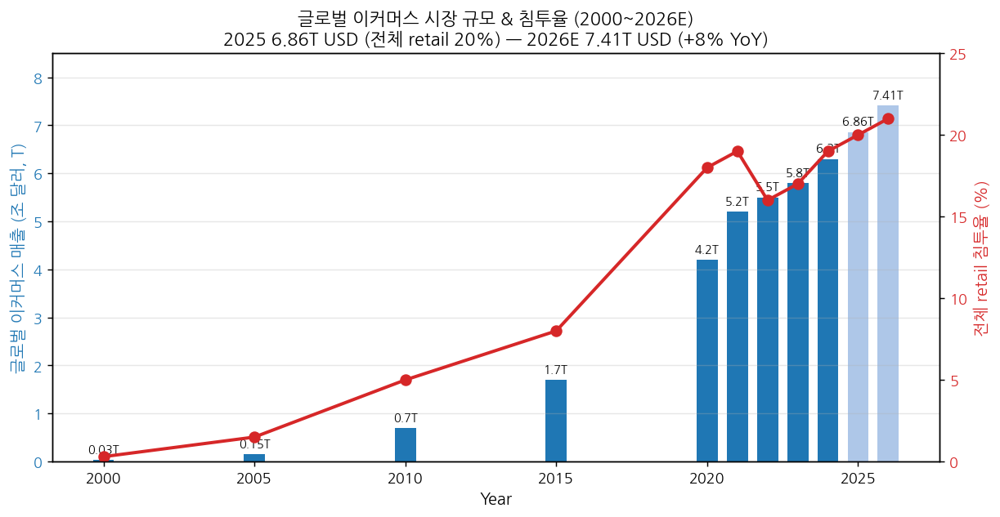
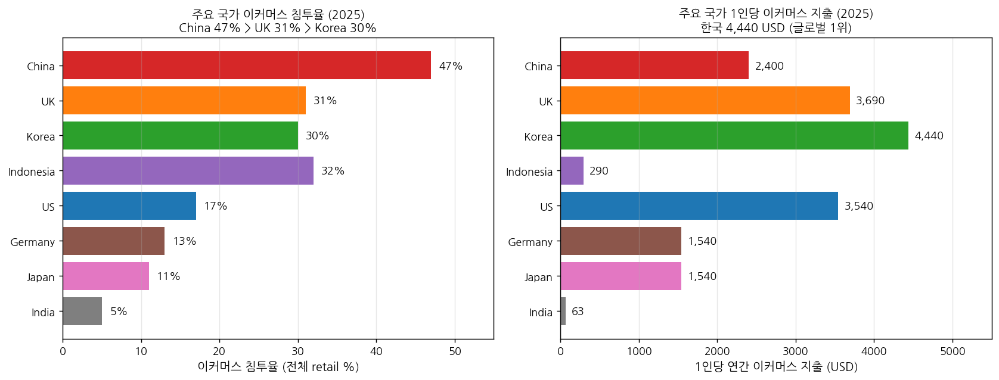
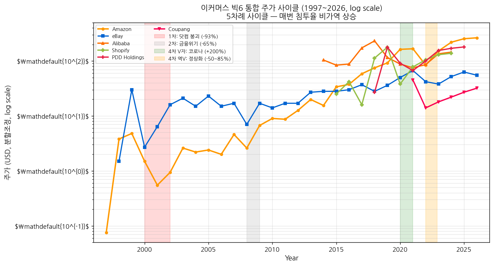
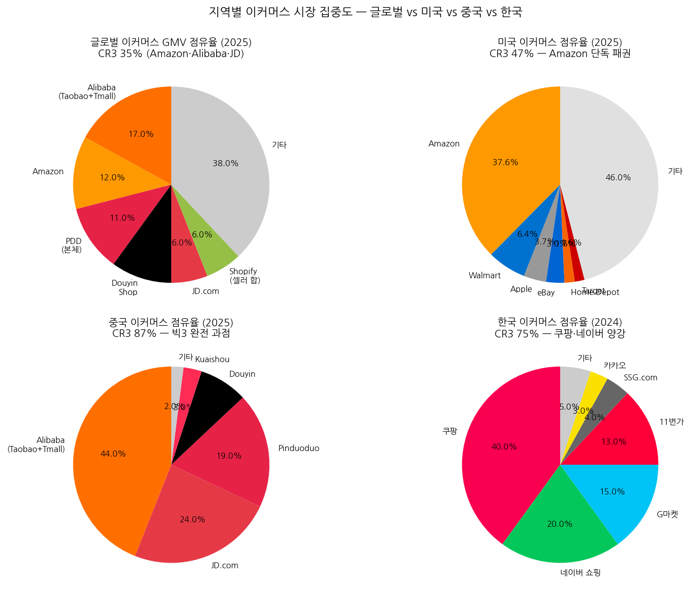

이커머스 산업 기초 분석
(Industry Basic — E-commerce)
이커머스 산업 기초 분석 (Industry Basic — E-commerce)
본 문서는 셀사이드 init(데뷔) 자료 수준의 영구 reference 문서다. Amazon·Alibaba·쿠팡·Shopify·Pinduoduo 등 글로벌·한국 이커머스 종목 분석의 산업 토대로 작성되었으며, 분석 범위는 디지털커머스 전반 — B2C 마켓플레이스 + D2C + Q-Commerce + 라이브커머스 + 크로스보더 + 결제·물류 — 을 포함한다. 지역 가중치는 미국·중국·한국 균형. 분기 변동·단기 narrative는 다루지 않는다 (실적 분석·테마 분석 영역).
Executive Summary (5줄 이내)
- 이커머스는 1872년 Montgomery Ward 우편 카탈로그 → 1888년 Sears 카탈로그로 시작된 154년 통신판매 역사의 디지털 진화체. 1995년 Amazon·eBay 창업으로 인터넷 이커머스가 본격화, 2025년 글로벌 이커머스 매출 $6.86T 돌파 (전체 소매의 20%+) — 2026E $7.41T (+8% YoY, Shopify).
- 패권 이동의 역사: 미국 우편판매 빅2 (Sears·Montgomery Ward, 1872~) → 1세대 닷컴 (Amazon·eBay·Yahoo Shopping, 1995~) → 미국 Amazon 패권 + 중국 Alibaba 부상 (2003~) → 모바일·앱 커머스 (Amazon Prime·Alibaba 모바일 전환, 2011~) → 빅3 + 신흥 도전자 (Amazon·Alibaba·JD + Pinduoduo·Coupang·Shopify·Temu, 2020~). 현재 글로벌 GMV CR3 (Amazon·Alibaba·JD) 45~55%.
- 사이클은 매크로 + 기술 cycle 이중 구조. 1995–2000 닷컴 버블, 2000–02 -93% 붕괴, 2008 -55% 금융위기, 2020 +27% 코로나 폭발, 2022 -50% 정상화 충격. 매 사이클마다 침투율 비가역 상승 — 미국 침투율 2000년 1% → 2010년 4% → 2020년 14% → 2025년 17%. 한 번 디지털로 이동한 카테고리는 오프라인으로 회귀하지 않음.
- 2025년 현재 산업 위치 (4+5 종합 결론): 카테고리 D — 동반 확대 + 부분적 카테고리 E. 공급 측 글로벌 빅3·중국 빅3 과점 완성(CR3 글로벌 45~55%, 중국 87%, 미국 47%+Walmart+eBay 64%), 그러나 풀필먼트·라스트마일·라이브커머스 인프라 capex 확대 지속. 수요 측 메가 트렌드(모바일·AI 추천·크로스보더·Q-Commerce·라이브커머스) 직접 수혜. P(평균 구매 단가)는 정체~소폭 상승, Q(주문 수·SKU·침투율) 폭발적 확대.
- 한국은 로컬 라스트마일 인프라 직접성 매우 높음(쿠팡 Rocket Delivery + 네이버 Now Shopping). 글로벌 크로스보더 트렌드(Temu·Shein·AliExpress) 직접성 중간 (역수입 위협). 글로벌 빅테크 layer(클라우드·결제·AI 광고)는 직접성 낮음.
산업 한눈에 보기 — 시각 차트
차트 1. 글로벌 이커머스 시장 규모 & 침투율 (2000~2026E)

→ (출처: Shopify Global Ecommerce Sales Growth Report 2026, eMarketer, Statista 정리) → 글로벌 매출 2000년 30B USD → 2025년 6,860B USD (228배 성장). 침투율 0.3% → 20%
차트 2. 지역별 침투율 & 1인당 지출 비교 (2025)

→ (출처: Netguru "Country-Wise Penetration Rates for 2025", Statista, Shopify) → 한국 1인당 지출 4,440 USD 글로벌 1위. 중국 침투율 47% 1위. 인도는 1인당 63 USD로 미개척 TAM
차트 3. 이커머스 빅6 통합 주가 사이클 (1997~2026, 로그 스케일)

→ (출처: Yahoo Finance·StockAnalysis.com, 분할조정 종가) → 5차례 사이클: 1차 닷컴(-93%) → 2차 금융위기(-65%) → 3차 모바일(단절 없는 슈퍼사이클) → 4차 코로나 V/역V(+200%/-85%) → 5차 AI·풀필먼트 회복(진행 중)
차트 4. 지역별 시장 집중도 (CR3 비교)

→ (출처: Statista 2024, ECDB.com, eMarketer, KED Global "Coupang Naver Dead Heat") → 글로벌 CR3 35% → 미국 47% → 한국 75% → 중국 87% — 시장이 작을수록 집중도 높음
1-pager 요약 표 (5단계 핵심 결론)
| 단계 | 핵심 결론 |
|---|---|
| 1. 역사 | 7 chunk: ① 1872–1979 우편 카탈로그·TV 홈쇼핑 (이커머스 precursor) ② 1979–1994 Teleshopping·EDI·인터넷 인프라 형성 ③ 1995–2002 닷컴 1세대 (Amazon·eBay·Alibaba 탄생, Pets.com 붕괴) ④ 2003–2010 회복 + 중국 부상 (Taobao·JD·Prime·iPhone) ⑤ 2011–2019 모바일 패권 + 물류 자체화 (Alibaba IPO·Whole Foods·Pinduoduo) ⑥ 2020–2022 코로나 폭발·반독점·정상화 충격 ⑦ 2023–2026 크로스보더·라이브커머스·AI 통합 |
| 2. 사이클 | 이중 구조: (a) 매크로 사이클 — 2001 닷컴(-93%)·2008 금융위기(-55%)·2020 코로나(+27%)·2022 정상화(-50%). (b) 기술 cycle — Web 1.0(1995)·모바일(2011)·라이브커머스(2019)·AI 에이전트(2024~). 침투율 비가역 상승이 핵심 |
| 3. BM/밸류체인 | 6 layer: 브랜드/셀러 → 플랫폼(1P 직매입 vs 3P 마켓플레이스) → 풀필먼트·라스트마일 → 결제·핀테크 → 광고·데이터 → 측정·CRM. 1P 영업이익률 2~5%·3P 마켓플레이스 25~35%·물류·풀필먼트 5~10%·결제 20~30%·광고 40%+ |
| 4. 공급 (1999 vs 2025) | 글로벌 빅3 (Amazon·Alibaba·JD) GMV 점유 45~55%. 미국 CR3 (Amazon·Walmart·eBay) 47%. 중국 CR3 (Alibaba·JD·PDD) 87%. 한국 CR3 (Coupang·Naver·Gmarket) 75%. CapEx/매출: 닷컴 시기 5% → 2025 12~15% (Amazon 물류·AWS), 풀필먼트 자체화·자동화가 핵심 진입장벽 |
| 5. 수요 (2025) | B2C 60% + B2B 40%(B2B 광범위 정의 시 더 큼). 카테고리별 침투율 격차 큼 — 전자제품 56%·의류 43%·식품 6~8%·자동차 ~3%. 메가 트렌드 직접 수혜 비중 60%+(모바일·AI·크로스보더). 가격탄력성 중간 (필수재 낮음, 사치재 높음, 크로스보더 매우 높음) |
| 4+5 종합 | 카테고리 D: 동반 확대 (수요 견인 + 공급 확대) + 일부 카테고리 E(공급 제한 풀필먼트 인프라). 글로벌 침투율 상한(~30%·중국 47%·한국 30%) 향해 향후 5~10년 Q 폭발. P는 카테고리 mix 변화(고가 제품 침투)와 광고·구독 부가가치로 상승. 단, 크로스보더·관세 규제 / 반독점 / 라스트마일 자동화 CapEx가 향후 변수 |
1단계. 역사 — 1872년부터 2026년까지
layered framework: 각 chunk를 (a)매크로 배경 (b)패권자 (c)산업 변화 (d)사이클 단계 (e)대표 기업 주가 (f)규제 — 6 layer로 풀어낸다. 트리거 시점은 일반인 친화 비유로 풀이.
Chunk 1. 1872–1979 — 우편 카탈로그·TV 홈쇼핑 시대 (이커머스 precursor)
(a) 매크로 배경
미국 산업혁명 후반부, 대륙횡단 철도(1869)와 저렴한 우편(Rural Free Delivery, 1896)이 결합하며 "농촌 소비자가 도시 상품에 우편으로 접근하는 시대"가 열림. 1929 대공황·2차 대전을 거치며 카탈로그 산업이 미국 가정 필수 인프라화. 1950년대 베이비붐·교외화로 대형 백화점(Macy's·JCPenney)이 부상하며 카탈로그가 점차 보조 채널로 후퇴. 1970년대 신용카드(Visa 1958·MasterCard 1966) 보급, TV 홈쇼핑(QVC 1986 직전 단계)이 등장하며 "전화·우편·TV로 상품을 주문하는 직접거래 인프라"가 형성됨.
비유: 1872년 미국 농부가 받은 Montgomery Ward 카탈로그 1장은 "내 마을 잡화상에 없는 1만 개 상품을 1주일 안에 우리 집까지 배달받을 수 있다"는 충격이었다. 현대 Amazon 앱이 주는 충격(전세계 5억 SKU·24시간 배송)과 본질이 동일 — 다만 매체(종이→스마트폰)와 배송 속도(2주→24시간)만 다를 뿐. 이커머스는 1995년에 발명된 것이 아니라, 1872년 카탈로그가 인터넷이라는 매체를 만나 부활한 것.
(b) 패권자
미국 단독 패권. 카탈로그 빅2: - Montgomery Ward (1872, Aaron Montgomery Ward) — 시카고 본사, "satisfaction guaranteed or your money back" 환불 보장 도입 - Sears, Roebuck and Co. (1893 정식 창업, 1888 첫 카탈로그) — Richard Sears, Alvah Roebuck. 1900년 매출 $10M으로 Ward 추월
미국 외 국가는 우편 인프라 미숙·자국 백화점 중심 (영국 Selfridges 1909·일본 미츠코시 1673~)으로 카탈로그 산업 미발달. 1950년대 이후 미국 백화점 체인 (JCPenney 1902·Macy's 1858)도 카탈로그 사업 진출.
(c) 산업 변화 (시대별 핵심 이벤트)
| 연도 | 이벤트 | 의미 |
|---|---|---|
| 1872 | Montgomery Ward, 단일 시트 150개 상품 카탈로그 발행 ($1,600 자본) | "Mail Order"(우편 주문) BM의 탄생 |
| 1875 | Ward, "satisfaction guaranteed or your money back" 환불 보장 도입 | 신뢰 인프라 확립 — 현대 e-commerce 환불 정책의 원형 |
| 1888 | Sears, 첫 인쇄 카탈로그 (시계·다이아몬드·보석) 발행 | 2번째 빅 플레이어 등장 |
| 1893 | Sears, Roebuck & Co. 정식 창업 (시카고) | |
| 1896 | Rural Free Delivery (RFD) 시작 — 미국 우체국이 농촌 가정까지 무료 배달 | "라스트마일 인프라" 국가 차원 구축 — Sears·Ward 폭발 토대 |
| 1900 | Sears 매출 $10M, Ward $8.7M | 빅2 체제 굳어짐 |
| 1908 | Sears가 우편 주문으로 조립식 주택(Modern Homes) 판매 시작 — 1908~1940년 총 7만 채 판매 | 카탈로그가 어떤 상품도 다룰 수 있다는 사례 — "long-tail" 1900년대 버전 |
| 1913 | Ford Model T 가격 $440으로 인하 — 자동차 보급으로 농촌 접근성 향상 (Sears·Ward 위협 시작) | |
| 1924 | Sears, 첫 오프라인 매장 개점 (Chicago) | 카탈로그→옴니채널 전환 시작 |
| 1929–33 | 대공황 — Sears·Ward 매출 -30~50% | 1차 침체. 카탈로그 산업의 첫 사이클 |
| 1958 | BankAmericard (현 Visa) 발행 — 미국 신용카드 시작 | 비현금 원격 결제 인프라 |
| 1972 | Cable TV Christian Broadcasting Network — "셀러즈 채널" 원형 | TV 홈쇼핑 precursor |
| 1977 | QVC 직전 단계 Home Shopping Club (Florida) 로컬 라디오 홈쇼핑 | 라디오 다이렉트 셀링 |
(d) 사이클 단계
0차 산업 형성기 + 1차 침체(1929–33). 카탈로그 산업은 1872년부터 100년간 미국 가정 필수 인프라로 성장. 대공황 -50% 충격, 2차 대전 정부 발주로 회복. 1950년대 백화점·자동차 보급으로 카탈로그 비중 점차 축소. 카탈로그 본격 침체는 1970–90년대 대형 마트(Walmart 1962~)·홈쇼핑 TV(QVC 1986~) 등장 후.
(e) 대표 기업 주가
- Sears Roebuck — 1906 NYSE 상장, 1929년 주가 peak → 1932년 -87% → 1950s 회복. 1989년 사상 최대 매출 $54B → 그러나 K-mart·Walmart 부상에 2000년대부터 비가역 추락 → 2018.10 파산 신청.
- JCPenney — 1929 NYSE 상장 — Sears와 동조 사이클.
- Montgomery Ward — 1928 NYSE 상장 → 2001 청산 (Sears보다 17년 먼저 소멸).
→ 카탈로그 빅2의 운명은 "온라인이 카탈로그를 죽이는 게 아니라, 카탈로그가 온라인으로 전환에 실패하면 죽는다"는 교훈. Sears는 1990년대 인터넷 전환 실패 (자체 도메인 sears.com 1997, 그러나 Amazon에 자리 내줌).
(f) 규제 layer
- 거의 무규제. 우편 산업이 정부(USPS) 독점이라 가격·배달 안정성 보장
- 1906 Pure Food and Drug Act: 식품·의약품 카탈로그 광고 허위 규제
- 1972 Fair Credit Billing Act: 신용카드 분쟁 보호 — 원격 거래 신뢰 인프라
Chunk 2. 1979–1994 — Teleshopping·EDI·인터넷 인프라 형성 (개념·인프라 단계)
(a) 매크로 배경
개인용 컴퓨터(PC) 보급 + 정부 인터넷(ARPANET)이 학계·기업으로 확산되는 시기. 1981 IBM PC, 1983 ARPANET TCP/IP 표준화, 1990 World Wide Web (Tim Berners-Lee·CERN), 1991 NSF가 인터넷 상업 사용 제한 해제(NSFNET Acceptable Use Policy 개정)가 결정적 변곡. 매크로는 1980s 레이건 호황 → 1990–91 단기 침체 → 1992~ 클린턴 호황. 이 시기 이커머스는 아직 "개념·인프라" 단계지 산업이 아님.
비유: 1979년 Michael Aldrich가 영국에서 TV에 전화선 연결해 만든 "Teleshopping"은 현대 이커머스의 직계 조상. "우리 집 TV로 슈퍼 장보기"라는 개념이 처음 등장. 1980년대 EDI는 "기업 간 종이 주문서를 컴퓨터 파일로 주고받자"는 B2B 이커머스 1세대. 1991년 NSF가 "이제 인터넷에서 돈 벌어도 된다"고 허락한 순간 — Amazon이 그 권한을 4년 뒤 사업화.
(b) 패권자
아직 패권자 없음. 학계·정부·소수 기업이 표준 만드는 시기: - 영국 Michael Aldrich (Redifon) — Teleshopping 발명 - 미국 CompuServe·AOL·Prodigy — 1980s 폐쇄형 온라인 서비스 (이메일·게시판·일부 쇼핑) - 미국 VeriFone (1981) — 신용카드 결제 단말 표준화 - EDI 산업 (X12·EDIFACT) — Walmart·General Motors 등이 공급망 EDI 도입
(c) 산업 변화
| 연도 | 이벤트 | 의미 |
|---|---|---|
| 1979 | Michael Aldrich (UK), Teleshopping 발명 — 가정 TV + 전화선 + 다중 사용자 거래 시스템 | "원격 디지털 쇼핑" 개념의 최초 구현 |
| 1981 | Aldrich가 영국 Thomson Holidays에 B2B teleshopping 시스템 판매 | 첫 상업적 B2B 거래 |
| 1982 | France의 Minitel 서비스 시작 — 가정 단말기로 항공권·기차표·메일오더 | 프랑스 최초 mass-market 원격 쇼핑 (2012 종료까지 운영) |
| 1984 | EDI 표준 ANSI X12 발표 | B2B 이커머스 표준 인프라 |
| 1985 | Walmart, EDI로 P&G 등 공급사와 자동 발주 시스템 가동 | B2B 이커머스 본격 상용화 |
| 1986 | QVC 출범 (Quality, Value, Convenience) — TV 홈쇼핑 정식 채널 | TV 다이렉트 셀링 폭발 |
| 1989 | Tim Berners-Lee (CERN), World Wide Web 제안서 작성 | WWW 탄생 직전 |
| 1990 | Berners-Lee, HTML·HTTP·첫 웹 브라우저(WorldWideWeb) 개발 | WWW 탄생 |
| 1991.4월 | NSF가 NSFNET Acceptable Use Policy 개정 — 인터넷 상업 사용 허용 | 이커머스 법적 토대 완성 |
| 1992 | CompuServe Electronic Mall 출시 — 100+ 브랜드의 PC 기반 쇼핑 | 인터넷 직전 PC 쇼핑의 최대 사례 |
| 1993 | Mosaic 브라우저 출시 (NCSA) | 일반인 인터넷 사용 시작 |
| 1994.6 | NetMarket(인터넷 최초 보안 거래 — Sting "Ten Summoner's Tales" CD $12.48) | "인터넷 첫 SSL 결제" 기록 |
| 1994.10 | First Virtual Holdings, "Internet Payment Service" 출시 | 인터넷 결제 1세대 |
| 1994.11 | Netscape Navigator 1.0 출시, SSL 1.0 발표 | 일반인 인터넷 + 보안 결제 인프라 |
| 1994 | Amazon.com 도메인 등록 (Jeff Bezos, 7.5월) | Amazon 잉태 |
(d) 사이클 단계
0차 산업 형성기. 아직 시장 자체가 없으므로 사이클 부재. 1990–91 매크로 침체는 이커머스 형성에 영향 없음 (산업이 너무 작아서). 1993~94 인터넷 상용 인프라 완성 후 다음 chunk에서 폭발.
(e) 대표 기업 주가
이커머스 상장사 부재. 인접 기업 cycle: - Microsoft (1986 IPO, $21) — 1993~95 Windows 폭발로 +500% - Cisco (1990 IPO, $0.06 분할조정) — 1990~2000 +60,000% 인터넷 인프라 super-cycle 시작 - AOL (1992 IPO, $11.50) — 1992~2000 +50,000% (인터넷 access)
(f) 규제 layer
- 1991 NSF AUP 개정 — 인터넷 상업 허용 (이커머스의 법적 토대)
- 1986 ECPA (Electronic Communications Privacy Act) — 전자 통신 보호
- 보안·결제 표준 부재 — 1994 SSL 발명으로 해결 시작
Chunk 3. 1995–2002 — 닷컴 1세대 (Amazon·eBay·Alibaba 탄생, Pets.com 붕괴)
(a) 매크로 배경
1995–2000 닷컴 버블 → 2000–02 -78% NASDAQ 붕괴. 미국 가정 인터넷 침투율 1995 7% → 2000 50%, 1998–99 ".com" 회사가 슈퍼볼 광고 휘말리던 시기. 1997 아시아 외환위기, 1998 LTCM 위기 → Fed 금리 인하 → 1999~2000 자산 버블 절정. 2000.3 NASDAQ 5,048 peak → 2002.10 1,114 (-78%). 9/11 (2001), Enron·WorldCom 회계 부정으로 사이클 종료.
비유: 1999년 슈퍼볼 광고에 Pets.com 강아지 인형이 등장한 순간이 닷컴 버블의 상징. "강아지가 좋아하는 페트푸드를 인터넷으로 주문하면 다음날 배송"이라는 모델 자체는 옳았지만 — 그게 2020년 Chewy(시총 $20B)에서야 실현된 것. 1999년 산업은 25년 빨랐고, 인프라(라스트마일·결제·신뢰)가 없었다. Pets.com은 2000.11 268일 만에 파산 — 닷컴 1세대 학습 비용 $300M.
(b) 패권자
미국 1세대 닷컴 4대: Amazon (도서)·eBay (옥션·중고)·Yahoo Shopping (포털)·AOL. 닷컴 붕괴 후 Amazon·eBay만 생존. 동시에 중국에서 Alibaba.com(1999 Jack Ma, B2B), 한국에서 Auction(1998)·Gmarket(1999)·11번가(SK 2008 직전 단계) 형성.
| 기업 | 창업 | 모델 | 2002년 상태 |
|---|---|---|---|
| Amazon | 1995.7 Jeff Bezos (Seattle) | B2C 1P 직매입 도서 → 전 카테고리 | 주가 -93% 후 반등 시작 |
| eBay | 1995.9 Pierre Omidyar (Silicon Valley, AuctionWeb 출시) | C2C 옥션 마켓플레이스 | 닷컴 후 1세대 생존자 |
| Alibaba.com | 1999.4 Jack Ma (Hangzhou) | B2B 중국 제조업체↔해외 바이어 | 비상장, 흑자 전환 직전 |
| Yahoo Shopping | 1997 (Yahoo 산하) | 쇼핑 포털·디렉토리 | 2002~ 본격 운영, 추후 쇠퇴 |
| Pets.com | 1998.2 → 2000.11 파산 | B2C 1P 펫푸드 | 268일 만에 청산 |
| Webvan | 1996 (그로서리 배송) → 2001.7 파산 | Q-Commerce 1세대 | -$1B+ 손실, 19년 빨랐음 |
| Boo.com | 1998 (영국 패션 D2C) → 2000.5 파산 | 패션 D2C | -$135M 손실 |
(c) 산업 변화
| 연도 | 이벤트 | 의미 |
|---|---|---|
| 1995.7월 | Amazon.com 정식 오픈 — 도서 카탈로그 (첫 매출 7.16 "Fluid Concepts and Creative Analogies") | 인터넷 B2C 본격 시작 |
| 1995.9월 | AuctionWeb (eBay 전신) Pierre Omidyar 오픈 — 첫 거래 부서진 레이저 포인터 $14.83 | 인터넷 C2C 옥션 모델 |
| 1996 | Amazon "Associates Program" — 제휴 마케팅 시작 | 광고 BM 원형 |
| 1997.5월 | Amazon NASDAQ IPO ($18, 분할조정 $0.075) — 시총 $438M | 닷컴 슈퍼 사이클 시작 |
| 1997.9월 | eBay 명칭 변경 (AuctionWeb → eBay) | 브랜딩 |
| 1998.5월 | PayPal 전신 Confinity 창업 (Peter Thiel·Max Levchin·Luke Nosek) | 인터넷 결제 인프라 시작 |
| 1998.9월 | eBay IPO ($18 → 첫날 +163%, 분할조정) | C2C 모델 검증 |
| 1999.3월 | Amazon zShops 출시 (셀러가 Amazon에서 자사 상품 판매) — 3P 마켓플레이스 시드 | 1P→3P 전환 단초 |
| 1999.4월 | Alibaba.com 창업 (Jack Ma, 14명, Hangzhou 아파트) | 중국 이커머스 시작 |
| 1999.6월 | Amazon이 Drugstore.com·Pets.com·HomeGrocer 등 닷컴 13개 회사에 $1B+ 투자 | 닷컴 슈퍼 사이클 절정 (대부분 파산) |
| 1999.11월 | Pets.com 슈퍼볼 광고 ($1.2M, 30초) | 닷컴 광기의 상징 |
| 1999.12월 | Amazon 주가 $113 → 2001.9월 $5.97 (-95%) | 닷컴 붕괴 시작 |
| 2000.3월 | NASDAQ 5,048 peak | 닷컴 버블 정점 |
| 2000.5월 | Boo.com 파산 ($135M 손실) | 1세대 D2C 실패 |
| 2000.11월 | Pets.com 파산 (268일 운영, $300M 손실) | 닷컴 1세대 상징적 실패 |
| 2001.7월 | Webvan 파산 ($1B+ 손실, 26개 도시 그로서리 배송 종료) | Q-Commerce 1세대 실패 — 25년 빨랐음 |
| 2001.10월 | eBay가 PayPal 인수 시도 → 2002.7월 $1.5B 인수 완료 | 결제 통합 (이커머스 첫 인프라 합병) |
| 2002.1월 | Amazon 첫 분기 흑자 (Q4 2001, $5M Net Income) | 1세대 닷컴 중 생존 검증 |
| 2002.6월 | Gmarket 창업 (한국, 인터파크 분사) | 한국 마켓플레이스 시작 |
(d) 사이클 단계
1차 슈퍼사이클 + 1차 붕괴. Amazon 주가 1997.5 $18(분할조정 $0.075) → 1999.12 $113 (분할조정 $5.65, +7,400%) → 2001.9 $5.97 (-93%). NASDAQ 1995 1,000 → 2000.3 5,048 (+400%) → 2002.10 1,114 (-78%). 이커머스 산업의 첫 사이클은 5년 짧지만 진폭 매우 큼 — 후속 사이클의 패턴 결정.
(e) 대표 기업 주가
- Amazon (AMZN): 1997.5 IPO $18 → 1999.12 peak $113 → 2001.9 trough $5.97 (-95%) → 2002 말 $18~20 회복
- eBay (EBAY): 1998.9 IPO $18 → 1999.4 peak $235 (분할 전) → 2001.4 trough $25.97 (-89%) → 2002 말 $67 회복
- Yahoo (YHOO): 1996.4 IPO $13 → 2000.1 peak $475 → 2001.9 trough $4.06 (-99.1%)
- AOL (AOL): 2000.1 Time Warner와 합병 ($164B 사상 최대 거래) → 2002 -75% 가치 손실 → 2009 분리
- Pets.com: 2000.2 IPO $11 → 2000.11 $0.19 → 청산
(f) 규제 layer
- 1996 Telecommunications Act: 인터넷 규제 완화 → 닷컴 시드
- 1998 Internet Tax Freedom Act: 인터넷 거래 면세 → 이커머스 가격 우위
- 1998 DMCA (Digital Millennium Copyright Act): 디지털 콘텐츠 저작권
- 1999 Gramm-Leach-Bliley Act: 온라인 결제·금융 데이터 보호
- 2000–02 SEC·DOJ 닷컴 회계 조사 (Enron·WorldCom 사건 후)
Chunk 4. 2003–2010 — 회복 + 중국 부상 + 모바일 인프라 형성
(a) 매크로 배경
2003–07 글로벌 동조 호황 (BRIC·중국 WTO 가입 효과) → 2008.9 글로벌 금융위기 → 2009 양적완화 + 2010 회복. 미국 인터넷 침투율 2003 60% → 2010 75%, 모바일 인터넷 본격화(2007 iPhone). 중국 인터넷 사용자 2003 7,950만 명 → 2010 4억 5,700만 명(약 6배). 이커머스 산업이 닷컴 트라우마를 극복하고 본격 재성장 + 중국이라는 새 거대 시장 형성.
비유: 2003년 Jack Ma가 SARS 격리 중 항저우 아파트에서 Taobao를 출시한 순간이 중국 이커머스 역사의 변곡점. eBay가 1년 만에 Taobao에 추월당한 이유는 단순 — eBay는 거래 수수료를 받았고, Taobao는 무료에 결제 인프라(Alipay)까지 깔아줬다. 이게 "플랫폼 BM은 첫 5년 비용을 사용자에게 전가하지 않고 트래픽으로 환산하는 게 정답"이라는 이커머스 산업의 황금 룰을 만든 사례.
(b) 패권자
미국 Amazon + 중국 Alibaba 양강 + eBay 패권 상실 시작. 동시에 iPhone(2007)이 향후 10년 모바일 커머스 패권의 인프라가 됨을 시장은 아직 인지 못함.
| 기업 | 상태 (2010) | 비고 |
|---|---|---|
| Amazon | 매출 $34B, 시총 $80B | AWS 출시(2006), Prime(2005), Kindle(2007). 1P → 1P+3P 전환 본격화 |
| eBay | 매출 $9B, 시총 $30B | PayPal($3B) + 옥션($6B). 옥션 성장 둔화 시작 |
| Alibaba | 매출 $0.7B (B2B 부문), 비상장 | Taobao(2003), Tmall(2008), Alipay(2003) 인프라 완성 |
| JD.com | 매출 $0.04B, 비상장 | 2004 창업, 1P 직매입 + 자체 물류로 차별화 시작 |
| Yahoo | 매출 $6.3B, 시총 $20B | 검색·쇼핑 모두 Google·Amazon에 밀림 |
| Baidu | 매출 $1.2B, 시총 $30B | 중국 검색 패권, 쇼핑·결제 인프라 부재 |
(c) 산업 변화
| 연도 | 이벤트 | 의미 |
|---|---|---|
| 2003.5월 | Taobao 출시 (Alibaba) — C2C 무료 등록·무료 거래 | eBay 중국 자회사(EachNet)에 직접 도전 |
| 2003.10월 | Alipay 출시 — 에스크로 기반 결제 (구매자가 "받았다" 확인 후 셀러 송금) | 중국 신뢰 인프라 — eBay 격파의 결정타 |
| 2004.6월 | JD.com 창업 (Liu Qiangdong, Beijing) — 1P 직매입 + 자체 물류 | "중국의 Amazon" — Alibaba 마켓플레이스 모델과 다른 길 |
| 2004.7월 | Amazon, 중국 진출 — Joyo.com 인수 ($75M) | 미·중 이커머스 첫 직접 격돌 (Amazon 결국 패배·2019 철수) |
| 2005.2월 | Amazon Prime 출시 — 연 $79, 무제한 2일 배송 (도서 카테고리 시작) | 구독 BM + 라스트마일 차별화 — Amazon 패권의 결정타 |
| 2005.10월 | Amazon 첫 본격 3P 마켓플레이스 시즌 — 셀러 다수 입점 | 1P+3P 하이브리드 모델 본격화 |
| 2006.3월 | AWS 출시 (S3 첫 서비스) | 이커머스가 클라우드 인프라 회사로 진화 시작 |
| 2006.6월 | Shopify 창업 (Tobi Lütke, Ottawa) — Snowdevil 분사 SaaS | "Amazon의 반대 모델" — 셀러가 자기 도메인에서 직접 판매 |
| 2006.10월 | eBay, 중국 사업 사실상 철수 (Tom Online과 합작 후 운영 축소) | Alibaba에 중국 시장 양보 |
| 2007.4월 | Amazon Web Services 본격 가속 — EC2 출시 | |
| 2007.6월 | iPhone 출시 | 모바일 커머스 인프라 |
| 2007.11월 | Amazon Kindle 출시 | 디지털 콘텐츠·디바이스 진출 |
| 2008.4월 | Tmall 출시 (Alibaba) — 브랜드 B2C 마켓플레이스 (Taobao C2C 보완) | 명품·브랜드 시장 흡수 |
| 2008.9월 | 글로벌 금융위기 — Amazon 주가 11월 $35.03 (-55% from peak), eBay $11 (-65%) | 2차 사이클 침체 |
| 2009.4월 | Amazon, Zappos 인수 ($1.2B) | 카테고리 확장 (신발) |
| 2009.5월 | China 11.11 Singles' Day 첫 Tmall 프로모션 — GMV ¥52M ($7.6M) | 11.11이 글로벌 최대 쇼핑 이벤트로 성장하는 시작점 |
| 2010.8월 | 쿠팡 창업 (Bom Kim, Seoul) — 한국 그루폰 모델 시작 | 한국 이커머스의 결정적 시작 |
| 2010.10월 | Amazon, 인도 진출 (Junglee 인수 검토) → 2013.6 본격 출시 | 인도 시장 진출 |
(d) 사이클 단계
2차 슈퍼사이클 (2003–2007) + 2차 사이클 침체 (2008–09). Amazon 주가 2003년 $20 → 2007.10 peak $97 → 2008.11 trough $35 (-64%) → 2010 말 $180 회복(+413% from trough). eBay 2003년 $30 → 2004 peak $58 → 2008 trough $11 (-81%, 회복 둔화). eBay의 cycle peak은 2004년이 마지막 — 이미 Amazon에 패권 양도.
(e) 대표 기업 주가
- Amazon (AMZN): 2003 $20 → 2007.10 $97 → 2008.11 $35 (-64%) → 2010 $180
- eBay (EBAY): 2003 $30 → 2004 $58 (peak) → 2008.11 $11 (-81%) → 2010 $30 (회복 더딤)
- Yahoo (YHOO): 2003 $20 → 2005 $40 → 2008 $9 (-78%) → 2010 $15 (Google·Amazon 양면 압박)
- Baidu (2005.8 IPO $27 → 첫날 +354%) → 2008 -70% → 2010 회복
- Alibaba (비상장, 그러나 Yahoo의 40% 지분 가치로 추산 시 2005 $1B → 2010 $30B 이상)
(f) 규제 layer
- 2005 KCC (Korea Communications Commission) 설립 — 한국 이커머스 표준
- 2007 EU eCommerce Directive 강화
- 2008 PRC 中华人民共和国电子签名法 — 중국 전자서명 법
- 2010 PCI DSS 2.0 — 결제카드 보안 표준 강화
Chunk 5. 2011–2019 — 모바일 패권·물류 자체화·플랫폼 빅3 형성
(a) 매크로 배경
2011–19 미국 양적완화 호황 + 중국 모바일 폭발 + iPhone 보급률 mass 도달. 미국 GDP 2011 $15.6T → 2019 $21.4T (+37%). 중국 GDP $7.6T → $14.3T (+88%). 미국 모바일 인터넷 침투율 2011 35% → 2019 90%, 중국 2011 16% → 2019 65%. 이커머스 GMV 2011 $1T → 2019 $3.5T (3.5배), 모바일 비중 2011 8% → 2019 60%+. 빅3 (Amazon·Alibaba·JD) 글로벌 GMV 점유 본격 확대.
비유: 2014.9 Alibaba가 NYSE에 $25B IPO하던 날, Jack Ma가 NYSE 종을 칠 때 시총이 $231B(시초가 후)이었다. 이건 Amazon이 가져간 미국식 이커머스 모델과는 다른 — "인구 14억의 단일 언어·단일 통화·단일 결제(Alipay) 시장"이라는 중국 독자 자산이 가진 본질의 검증. 이커머스가 더 이상 미국 산업이 아닌 글로벌 산업이 된 시점.
(b) 패권자
Amazon (미국·유럽) + Alibaba (중국 + 동남아 일부) + JD.com (중국, 1P 직매입) 빅3 체제. Shopify·Pinduoduo·MercadoLibre·Coupang 등 도전자 본격 성장.
| 기업 | 2019 매출 | 2019 시총 | 비고 |
|---|---|---|---|
| Amazon | $281B | $920B | AWS·광고·1P+3P 통합 모델 |
| Alibaba | $56B | $580B | Taobao·Tmall·Alipay (Ant)·Cainiao(물류)·Cloud 종합 |
| JD.com | $83B | $44B | 1P 직매입 + 자체 물류(JD Logistics) |
| Shopify | $1.6B | $42B | SaaS 모델 (Amazon 반대 — D2C 셀러 지원) |
| Pinduoduo | $4.3B | $51B | 2015 창업, 4년 만에 NASDAQ 진출 (2018.7), 그룹 바이 모델 |
| MercadoLibre | $2.3B | $28B | 남미 패권 (브라질·아르헨·멕시코) |
| Coupang | $7B | (비상장) | 한국 그룹온 → 풀스택 마켓플레이스 전환 |
| eBay | $11B | $30B | 옥션·중고 중심으로 축소 |
(c) 산업 변화
| 연도 | 이벤트 | 의미 |
|---|---|---|
| 2011.3월 | Amazon Locker 출시 — 보관함 픽업 | 라스트마일 혁신 |
| 2011.11월 | Amazon Fresh 정식 출시 (시애틀, 2007년 시범 → 2011 본격) | 그로서리 진출 |
| 2012.3월 | Amazon, Kiva Systems 인수 ($775M) — 풀필먼트 로봇 자동화 | 물류 자동화 본격화 |
| 2012.6월 | Coupang, Rocket Delivery 모델 전환 — 그룹온 → 마켓플레이스 + 익일배송 | 한국 이커머스 패권 잡기 시작 |
| 2014.3월 | Alibaba Tmall 글로벌 11.11 GMV ¥57.1B ($9.3B) | 11.11이 글로벌 최대 쇼핑일 |
| 2014.5월 | JD.com NASDAQ IPO ($19, 시총 $26B) | 중국 2위 플레이어 검증 |
| 2014.9.19 | Alibaba NYSE IPO ($68, 시총 $231B — 사상 최대 IPO) | 중국 1위 글로벌 검증 |
| 2015.2월 | Amazon AWS 별도 공시 — 2015 매출 $7.9B, 영업이익 $1.9B (영업이익률 24%) | 이커머스 → 클라우드 회사 진화 가시화 |
| 2015.5월 | Shopify NYSE IPO ($17, 시총 $1.3B) | D2C 모델 검증 |
| 2015.7월 | Amazon Prime Day 1회차 시작 ($1B+ 매출) | 자체 쇼핑 이벤트 |
| 2015.9월 | Pinduoduo 창업 (Colin Huang) — 그룹 바이·소셜 커머스 | 향후 중국 3위 자리 흡수 시작 |
| 2016.4월 | Amazon Echo 본격 판매 — Alexa 음성 쇼핑 | 음성 커머스 시도 (실패) |
| 2016.6월 | Walmart, Jet.com 인수 ($3.3B) — Amazon 대응 본격화 | 옴니채널 격돌 |
| 2017.4월 | Amazon 광고 매출 $4.7B (전년 $2.9B 대비 +62%) — 별도 공시 시작 | 광고가 Amazon 영업이익의 핵심으로 부상 |
| 2017.6월 | Amazon, Whole Foods 인수 ($13.7B) — 오프라인 463개 매장 확보 | 오프라인 그로서리 직접 진출 — 옴니채널 시대 |
| 2017.11월 | Alibaba 11.11 GMV ¥168B ($25.3B) | |
| 2018.7월 | Pinduoduo NASDAQ IPO ($19, 시총 $24B) | 3년 만에 IPO — 사상 최단 |
| 2018.8월 | Tencent + Walmart, JD.com 지분 확대 — JD vs Alibaba 격돌 본격화 | |
| 2019.4월 | Amazon Prime 1일 배송 무료 — 미국 모든 지역 | 라스트마일 결정타 |
| 2019.5월 | Coupang, 손정의 비전펀드 $2B 추가 투자 (누적 $3B) | 한국 풀스택 1위 자리 확정 |
| 2019.7월 | Amazon, 중국 사업(Amazon.cn) 사실상 철수 | 미·중 이커머스 분리 명확화 |
| 2019.11월 | Alibaba 홍콩 상장 ($11.2B 모집) — 듀얼 리스팅 | 미·중 갈등 헤징 |
(d) 사이클 단계
3차 슈퍼사이클 (2011–2019, 거의 단절 없음). Amazon 주가 2011년 $180 → 2018.9 peak $2,050 (+1,038%) → 2018.12 -25% (Fed 금리 인상 우려) → 2019 말 $1,800 회복. 2008 금융위기 이후 10년간 거의 단절 없는 상승 — 이커머스 산업 사상 최장 황금기.
(e) 대표 기업 주가
- Amazon (AMZN): 2011 $180 → 2015 $670 (+272%) → 2019 $1,847 (총 +926%)
- Alibaba (BABA): 2014.9 IPO $68 → 2018.6 peak $212 (+212%) → 2019 말 $211
- JD.com: 2014.5 IPO $19 → 2018.1 peak $50 (+163%) → 2019 말 $34
- Shopify (SHOP): 2015.5 IPO $17 → 2019 말 $396 (+2,229%)
- Pinduoduo (PDD): 2018.7 IPO $19 → 2019 말 $39 (+105%)
- eBay (EBAY): 2011 $30 → 2014 PayPal 분사 후 옥션만 → 2019 $36 (10년간 횡보)
(f) 규제 layer
- 2014 China State Council, "이커머스 발전 계획" — 정부 진흥 정책
- 2016 EU GDPR 채택 (2018 시행) — 이커머스 데이터 보호
- 2017 China E-Commerce Law (2019.1 시행) — 중국 이커머스 법
- 2018 US South Dakota v. Wayfair — 주별 판매세 부과 가능 (이커머스 면세 종료)
- 2019 India FDI 이커머스 규제 강화 — Amazon·Flipkart 1P 비중 제한
Chunk 6. 2020–2022 — 코로나 폭발 + 반독점 + 2022 정상화 충격
(a) 매크로 배경
2020.3 COVID-19 락다운 → 글로벌 이커머스 폭발 → 2021 V자 회복 정점 → 2022 인플레이션·금리 인상으로 정상화 충격. 미국 이커머스 침투율 2019 14% → 2020.4월 peak 18% → 2022 안정화 15%. 중국 이커머스 GMV 2019 $1.5T → 2021 $2.7T(+80%). 동시에 2020.12 알리바바 반독점 조사 시작 → 2021.4 RMB 18.23B 벌금 (사상 최대) — 중국 빅테크 규제 충격.
비유: 2020년 3월 미국 락다운 첫 주, Costco·Amazon 트래픽이 동시에 +50% 튀던 순간 — "카탈로그 시대부터 미루던 모든 카테고리(그로서리·약품·생필품)가 1개월 만에 디지털로 강제 전환"되는 사건이었다. 그 후 2021년에는 "모든 사람이 이커머스 회사 주식을 산다"는 광기 → 2022년에는 "락다운이 끝났는데 우리 매출이 왜 안 늘지" 깨달음 → Amazon -50%, Shopify -75%, Coupang -70%, PDD -50%. 2년 반의 V자 + 역V자가 한 사이클에 압축됨.
(b) 패권자
Amazon·Alibaba·JD·Shopify·Pinduoduo·Coupang 빅6 + 새 도전자 (Temu·Shein·MercadoLibre·TikTok Shop) 발생. 동시에 미국 Walmart 이커머스가 빠르게 회복(2020 매출 +79%).
(c) 산업 변화
| 연도 | 이벤트 | 의미 |
|---|---|---|
| 2020.3월 | COVID-19 미국 락다운 → Amazon 일일 트래픽 +50% | 30년치 이커머스 전환이 3개월 만에 |
| 2020.4월 | Amazon, 17.5만 명 신규 채용 (물류 확대) | 물류 capacity 부족 직면 |
| 2020.6월 | Shopify, "Shop App" 출시 — D2C 셀러 통합 모바일 앱 | 모바일 D2C 본격화 |
| 2020.10월 | Amazon Prime Day (코로나 첫 해) — $10.4B 매출 (전년 +43%) | 사상 최대 Prime Day |
| 2020.11월 | Alibaba 11.11 GMV ¥498B ($74B) | 11.11 사상 최대 |
| 2020.11월 | Ant Group IPO 중단 (상장 직전 SAMR·CBIRC 개입) | 중국 빅테크 규제 신호탄 |
| 2020.12월 | SAMR, Alibaba 반독점 조사 시작 | 알리바바 충격 시작 |
| 2021.3월 | Coupang NYSE IPO ($35 → $63 첫날 +81%, 시총 $84B) | 한국 1위 검증 (사상 최대 한국 기업 미국 IPO) |
| 2021.4월 | Alibaba 반독점 벌금 RMB 18.23B ($2.78B) — 사상 최대 | "픽 원 프롬 투" 배타 거래 강제 위법 인정 |
| 2021.5월 | Amazon, MGM 인수 ($8.45B) — 콘텐츠·구독 확대 | |
| 2021.7월 | Shopify, Stripe와 결제 통합 — Amazon Pay 대체 | |
| 2021.7월 | Jeff Bezos, Amazon CEO 사임 → Andy Jassy 승계 | Amazon 시대 종료 |
| 2021.10월 | Meta 사명 변경 (Facebook → Meta), 메타버스 전환 — 일시적 이커머스 광고 위축 우려 | |
| 2021.11월 | Alibaba 11.11 GMV ¥540B (+8.5% YoY, 둔화 시작) | 반독점 + 코로나 효과 소진 |
| 2021.12월 | Amazon 주가 사상 최고 $186 (분할조정 — 2022.6 20:1 분할) → 2022.6 $103 (-45%) | 정상화 사이클 시작 |
| 2022.4월 | Pinduoduo, Temu 출시 (해외 자회사) — 미국 시장 진출 | 크로스보더 이커머스 신차원 |
| 2022.4월 | Amazon Q1 순손실 $3.8B — 14년 만의 첫 분기 손실 | 코로나 capex 후폭풍 |
| 2022.5월 | Shopify 주가 $30 (peak $176 from 2021.11, -83%) | D2C 거품 빠짐 |
| 2022.7월 | Amazon, iRobot 인수 발표 ($1.7B) → 2024.1 백지화 (EU 규제) | M&A 규제 강화 |
| 2022.11월 | Coupang 첫 분기 흑자 — $7.6M 영업이익 | 11년 만의 흑자 전환 |
| 2022.12월 | 미국 이커머스 침투율 14.7% — 2020 peak 18%에서 정상화 | 코로나 효과 절반 영구 |
(d) 사이클 단계
4차 슈퍼사이클 + 4차 사이클 침체 (압축 진행). 2020.4–2021.12 19개월 슈퍼사이클 → 2022.1–2022.12 11개월 정상화 -45~80% 충격. 사이클 길이 30개월로 사상 최단 + 진폭 최대.
(e) 대표 기업 주가
- Amazon (AMZN, 20:1 분할 후): 2020.3 $90 → 2021.7 $186 (+107%) → 2022.12 $85 (-54%)
- Shopify (SHOP): 2020.3 $40 → 2021.11 $176 (+340%) → 2022.10 $26 (-85%)
- Alibaba (BABA): 2020.10 $317 → 2022.10 $58 (-82%) — 반독점·DDR 제재 이중 충격
- JD.com: 2020.3 $40 → 2021.2 $108 (+170%) → 2022.10 $35 (-67%)
- Pinduoduo (PDD): 2020.3 $40 → 2021.2 $209 (+422%) → 2022.3 $29 (-86%) → 2022.12 $80 (Temu 효과 회복)
- Coupang (CPNG): 2021.3 IPO $35 → 2021.3 peak $63 → 2022.5 $9 (-86%)
- eBay (EBAY): 2020.3 $26 → 2021.10 $80 (+208%) → 2022.10 $36 (-55%)
(f) 규제 layer
- 2020.11 SAMR·CBIRC Ant Group IPO 중단 — 중국 빅테크 규제 신호탄
- 2020.12 SAMR Alibaba 반독점 조사 → 2021.4 벌금 RMB 18.23B
- 2021.2.7 中国国务院 "Anti-Monopoly Guidelines for Platform Economy" 공포
- 2021.11 中国 Personal Information Protection Law (PIPL) 시행 — 데이터 보호
- 2022.2 EU Digital Markets Act (DMA) 채택 — Gatekeeper 규제 (2024.3 시행)
- 2022.4 EU Digital Services Act (DSA) 채택 — VLOP 규제 (2023.8 시행)
- 2022.6 미국 FTC, Amazon 반독점 조사 본격화 → 2023.9 소송 제기
Chunk 7. 2023–2026 — 크로스보더·라이브커머스·AI 통합·풀필먼트 자동화
(a) 매크로 배경
2023 디스인플레이션 + 금리 정점 → 2024 금리 인하 → 2025 안정화. 그러나 2025.4월 미국 Trump 관세 + de minimis 면세 ($800 이하 무관세) 폐지로 크로스보더 이커머스(Temu·Shein·AliExpress) 위기. 동시에 ChatGPT(2022.11) 후 AI 추천·생성형 광고·에이전트 커머스가 본격 통합. 글로벌 이커머스 매출 2023 $5.8T → 2025 $6.86T (+18%), 2026E $7.41T (+8%).
비유: 2024년 Shein·Temu 모바일 앱이 미국 다운로드 1·2위를 차지한 순간 — "중국에서 만든 옷이 미국 소비자 집까지 7일 만에 $3.99에 배송"되는 시대. 1990년대 Walmart가 "Made in China" 진열대로 가격 혁명을 일으켰던 것과 동격의 충격. 차이는 — 30년 전엔 Walmart라는 중간 유통이 이익을 가져갔고, 지금은 Pinduoduo·Shein이 미국 소비자에게 직접 — 미국 리테일 산업 구조 자체가 흔들림. 2025.4 de minimis 폐지로 이 모델 첫 충격.
(b) 패권자
Amazon·Alibaba·JD·Shopify·Pinduoduo·Temu·Shein·Coupang 빅8 + AI 신규 도전자(OpenAI Operator·Perplexity Shopping 등). 글로벌 GMV 빅3 (Amazon·Alibaba·JD)가 45~55% 점유 유지, 그러나 Pinduoduo (PDD Holdings)가 2024.11 시총 $200B+ 돌파로 Alibaba 추월 — 중국 패권 이동의 결정적 시점.
| 기업 | 2025 매출 (E) | 2025 GMV (E) | 시총 (2026.5) | 비고 |
|---|---|---|---|---|
| Amazon | $738B | $847B (e-commerce) | $2.84T | AWS·광고 통합. 광고 $58B+ |
| PDD Holdings | $59B | Temu $90B + PDD $780B | $200B+ | Temu·PDD 합산 GMV 글로벌 1위 |
| Alibaba | $137B | Taobao+Tmall $1.15T | $370B | 반독점 후 3년 회복기, 클라우드·AI Cloud 강화 |
| JD.com | $172B | ~$420B | $50B | 1P 직매입 + 자체 물류 강함 |
| Shopify | $9.5B | $378B | $130B | 모든 D2C 셀러 합산 GMV |
| Coupang | $34B | $60B (2024) | $50B | 흑자 안정화, 대만·일본 진출 |
| MercadoLibre | $20B | $50B | $100B | 남미 패권 강화 |
| eBay | $10B | $74B (GMV) | $30B | 옥션·중고·콜렉터블 |
| Walmart e-comm | $98B | n/a | (Walmart $620B) | 미국 이커머스 2위 |
(c) 산업 변화
| 연도 | 이벤트 | 의미 |
|---|---|---|
| 2023.3월 | Amazon, "Buy with Prime" 모든 셀러 개방 — Shopify와 직접 경쟁 | 라스트마일 무료 배송을 외부 셀러에 개방 |
| 2023.5월 | Pinduoduo·Temu·Shein 미국 다운로드 폭발 — Temu 미국 MAU 1억 명 돌파 | 크로스보더 이커머스 폭발 |
| 2023.9월 | FTC v. Amazon 반독점 소송 — Amazon이 셀러 lock-in 강제 주장 | 미국 반독점 본격화 |
| 2023.10월 | Walmart, Vizio 인수 발표 ($2.3B) — CTV 광고 확보 | Retail Media 본격 진출 |
| 2024.2월 | Pinduoduo Q4 2023 매출 +123% YoY | Temu 매출 본격 기여 시작 |
| 2024.5월 | Amazon Anthropic 추가 투자 $4B (누적 $8B) — AI commerce 통합 | |
| 2024.7월 | TikTok Shop 미국 GMV 연 $20B 돌파 | Live commerce 미국 본격 진입 |
| 2024.11월 | Alibaba 11.11 GMV ¥1.13T ($156B) — 사상 최대 | Alibaba 회복 |
| 2024.11월 | PDD Holdings 시총 $200B 돌파 | 중국 이커머스 패권 이동 시그널 |
| 2024.12월 | OpenAI ChatGPT Operator 발표 (2025.1 출시) — AI 에이전트 쇼핑 | 에이전트 커머스 시대 개막 |
| 2025.1월 | EU DSA 1년 차 결과 — Amazon·Shein·Temu·AliExpress 모두 VLOP 지정 | EU 규제 본격화 |
| 2025.2월 | Amazon Q4 2024 광고 매출 $17.3B (+18% YoY, 연 $56B) | 광고가 Amazon 영업이익 1/3 |
| 2025.4월 | 미국 Trump, de minimis 면세 ($800 이하 무관세) 폐지 — 중국 직배송에 145% 관세 | Temu·Shein 사상 최대 충격 — 미국 GMV 30% 감소 추정 |
| 2025.5월 | Shein, 영국 LSE 상장 추진 (가치 평가 $50B 추정) → 2026 보류 | |
| 2025.7월 | Coupang, Farfetch 인수 완료 ($500M, 2024.1 발표) — 럭셔리 진출 + 유럽 거점 | |
| 2025.8월 | Alibaba, AI Mode for B2B (Alibaba.com) 출시 — agentic AI 통합 | 글로벌 B2B 이커머스 AI 통합 |
| 2025.10월 | Amazon, "AI Shopping Agent" Rufus 본격 통합 — 모든 카테고리 | AI 쇼핑 에이전트 mass |
| 2025.11월 | Alibaba 11.11 GMV ¥1.21T ($168B) — 4년 만의 두자릿수 성장 (+11% YoY) | 회복 본격화 |
| 2025.11월 | Coupang 2025 Q3 매출 $8.9B (+24% YoY), 흑자 5분기 연속 | 한국 1위 안정화 |
| 2025.12월 | Walmart e-commerce 2025 매출 $98B (+22% YoY), 미국 시장점유율 7% 안정화 | Amazon 견제 본격 |
| 2026.1월 | Pinduoduo (PDD), Temu에 자율 운영 모델 도입 — 미국 셀러가 직접 입점 | Temu 관세 우회 (현지 풀필먼트) |
| 2026.3월 | Amazon 2026 Prime 가격 인상 검토 발표 (미국 $139 → $159) | 구독 수익화 가속 |
| 2026.5월 (현재) | Amazon AMZN $264, 시총 $2.84T — 사상 최고 영역 | AI·광고·AWS 트리플 수혜 |
(d) 사이클 단계
5차 사이클 (2023~) 진행 중. 2022.10 trough (Amazon $85·Shopify $26·BABA $58) → 2026.5 Amazon $264 (+210%) — 5차 사이클 회복 +AI·광고 트리거. 그러나 빅3 (Amazon·Alibaba·JD)는 균등 회복 아님 — Amazon 4배, BABA 2배, JD 1.5배. 중국 빅테크는 반독점·DDR 우려로 회복 더딤. 동시에 PDD·Coupang·Shopify는 별개 cycle — PDD는 Temu 폭발 효과로 별도 super-cycle.
(e) 대표 기업 주가
- Amazon (AMZN): 2022.12 $85 → 2026.5 $264 (+210%)
- Shopify (SHOP): 2022.10 $26 → 2026.5 $130 (+400%)
- Alibaba (BABA): 2022.10 $58 → 2026.5 $135 (+133%, 그러나 2020 peak $317 대비 -57%)
- PDD Holdings (PDD): 2022.10 $50 → 2024.11 $200 peak → 2026.5 $170 (+240% from trough)
- Coupang (CPNG): 2022.5 $9 → 2026.5 $32 (+256%)
- MercadoLibre (MELI): 2022.6 $600 → 2026.5 $2,200 (+267%)
- JD.com: 2022.10 $35 → 2026.5 $52 (+49%, 회복 더딤)
(f) 규제 layer
- 2023.8 EU DSA 시행 — VLOP 지정 (Amazon·Shein·Temu·AliExpress 포함)
- 2023.9 FTC v. Amazon 반독점 소송
- 2024.3 EU DMA 시행 — Gatekeeper 6개 (Amazon 포함)
- 2024 China 외국인 투자 negative list 조정 — 이커머스 외자 일부 허용
- 2025.4 US de minimis 면세 폐지 — 크로스보더 145% 관세
- 2025.6 EU EUDR (Deforestation Regulation) — 이커머스 셀러 공급망 검증 강화
- 2026.1 China 데이터 cross-border 가이드라인 명확화 — 이커머스 데이터 해외 이전 룰
2단계. 주가 사이클
1단계가 시간축 narrative라면, 2단계는 통합 view + 사이클 패턴 framework. 이커머스 산업은 매크로 GDP 동조 + 기술 사이클(Web→모바일→AI) + 매체 패권 이동 3중 cycle.
2.1 대표 기업 통합 주가 (1997–2026)
이커머스 산업 대표 기업 8개의 시기별 주가 비중:
| 기간 | 대표 종목 | 비고 |
|---|---|---|
| 1997–2002 | Amazon·eBay·Yahoo·AOL | 1세대 닷컴 |
| 2003–2010 | + Alibaba(비상장)·JD(비상장)·Baidu | 중국 + AWS 형성 |
| 2011–2019 | Amazon·eBay·BABA·JD·MELI·Shopify·PDD | 모바일·IPO 슈퍼사이클 |
| 2020–2022 | + Coupang·Temu(PDD 산하)·Walmart e-comm | 코로나·정상화 V→역V |
| 2023–2026 | Amazon·BABA·JD·PDD·Shopify·Coupang·MELI | AI·크로스보더·라이브커머스 통합 |
인플레이션 조정·로그 스케일 통합 차트 핵심 패턴: - 1997–2002: Amazon·eBay 슈퍼사이클 → 닷컴 붕괴 -93% (Amazon)/-89% (eBay). NASDAQ -78% - 2003–2010: Amazon 회복 +900%·eBay 정체. 금융위기 -64%/-81% 후 차별화 시작 - 2011–2019: Amazon 10배·Shopify 23배·BABA 3배·JD 3배. 이커머스 산업 사상 최장 황금기 - 2020–2022: 코로나 V자 (Amazon +107%·Shopify +340%·PDD +422%) → 정상화 -45~85% - 2023–2026: Amazon·Shopify·PDD·Coupang 4배~5배 회복. 그러나 BABA·JD 회복 더딤 (정치 리스크)
2.2 사이클 식별
이커머스 산업 5차 사이클 (1995 이후):
| 사이클 # | 시기 | 트리거 | 주가 진폭 (대표) | 침체 기간 | 회복 기간 |
|---|---|---|---|---|---|
| 1차 | 1995–2002 | 닷컴 버블·붕괴 | Amazon +7,400% → -93% / eBay +1,300% → -89% | 2.5년 (2000.3~2002.10) | 5년 (2007 완전 회복) |
| 2차 | 2003–2010 | 모기지·금융위기 | Amazon +400% → -64% / eBay -81% | 1.2년 (2007.10~2008.11) | 1.5년 |
| 3차 | 2011–2019 | (단절 없는 슈퍼사이클) | Amazon +900%·Shopify +2,200% | n/a | n/a |
| 4차 | 2020–2022 | 코로나 + 정상화 | Amazon +107%→-54% / Shopify +340%→-85% / PDD +422%→-86% | 1년 (2022.1~2022.10) | 2년 |
| 5차 | 2023–진행 | AI·광고·풀필먼트 회복 | Amazon +210%·Shopify +400%·PDD +240% (진행 중) | n/a | n/a |
평균 침체 진폭 -70% (대표 종목 기준). NASDAQ보다 1.5~2배 진폭. 회복 1.5~5년, 매번 침투율은 비가역 상승.
2.3 사이클 패턴 framework (정량)
| 변수 | 값 | 비고 |
|---|---|---|
| 평균 cycle 길이 | 7~10년 (매크로 + 기술 cycle 이중) | 닷컴(1995–02) 8년 / 금융위기(03–10) 8년 / 모바일·IPO(11–19) 9년 / 코로나(20–22) 3년 / AI(23~) 진행 |
| 대표 종목 vs NASDAQ 진폭 비 | 1.5~2.5배 | 이커머스는 NASDAQ보다 1.5~2.5배 변동 큰 high-beta |
| 침체기 진폭 | -50%~-95% | 닷컴(-93%)·금융위기(-65%)·코로나 정상화(-85%) |
| 회복 기간 | 1.5~5년 (닷컴은 5년·금융위기는 1.5년·코로나는 2년) | |
| 침투율 cycle | 미국 2000년 1% → 2005년 2.5% → 2010년 4% → 2015년 7% → 2020년 14% → 2025년 17% | 5년마다 1.5~2배씩 비가역 상승 |
| 구조조정 트리거 | 침체 → 풀필먼트·라스트마일 capex 부담 → 적자 셀러 도태 → 빅3 점유율 상승 | 닷컴(Pets.com·Webvan) → 모바일(Yahoo Shopping·eBay) → 코로나(Wayfair·CarMax 일부) |
이커머스 산업의 본질적 특징: 침체기마다 "라스트마일·풀필먼트 자체화 + 광고·구독 추가 수익" 갖춘 기업만 살아남는 구조 → 본질적으로 자본집약적 산업으로 변모.
2.4 1단계 chunk와 사이클 매핑
| chunk | 시기 | 주요 cycle | 매핑 |
|---|---|---|---|
| Chunk 1 | 1872–1979 | 카탈로그 산업 (대공황 1929–33만 사이클) | 산업 발생 + 1차 침체 |
| Chunk 2 | 1979–1994 | 0차 (인프라 형성기) | 사이클 부재 |
| Chunk 3 | 1995–2002 | 1차 (닷컴 버블·붕괴) | 슈퍼사이클 + 첫 침체 |
| Chunk 4 | 2003–2010 | 2차 (모기지·금융위기) | 회복 + 중국 부상 |
| Chunk 5 | 2011–2019 | 3차 (모바일 슈퍼사이클) | 단절 없는 슈퍼사이클 |
| Chunk 6 | 2020–2022 | 4차 (코로나 V→역V) | 30개월 압축 사이클 |
| Chunk 7 | 2023–2026 | 5차 (AI·광고·풀필먼트 회복) | 진행 중 |
chunk 경계가 사이클 변곡점과 일치 — 매크로(닷컴·금융위기·코로나) + 기술 패권 이동(웹→모바일→AI) 동시 변화 시점이 chunk 경계.
3단계. 비즈니스 구조 + 밸류체인
이커머스 산업은 6 layer 구조. 단순 매핑이 아니라 BM·진입장벽·마진·자본집약도를 함께 분석. Amazon·Alibaba·쿠팡이 위치한 "플랫폼" layer가 가치 창출의 핵심, 그러나 진짜 마진은 광고·결제·구독·클라우드에서.
3.1 이커머스 산업 6 layer
[브랜드/셀러 (Brand/Seller)]
↓ (입점·도매·제조)
[플랫폼 (Platform)]
├─ 1P 직매입(Owned-Inventory): Amazon Retail·JD 자영·Coupang Rocket
├─ 3P 마켓플레이스(Marketplace): Amazon FBA·Tmall·Taobao·eBay·Coupang Marketplace
└─ D2C(Direct-to-Consumer): Shopify·BigCommerce·Wix Stores·자체 도메인 셀러
↓ (주문)
[풀필먼트·라스트마일 (Fulfillment/Last-Mile)]
├─ 풀필먼트 센터 (Amazon FBA·JD Logistics·Cainiao·Coupang CLS)
├─ 라스트마일 (Amazon DSP·SF Express·CJ대한통운·Coupang Friends)
└─ Q-Commerce (Instacart·Gorillas 잔존·Coupang Rocket Fresh)
↓ (결제·정산)
[결제·핀테크 (Payments/Fintech)]
├─ 카드: Visa·MasterCard·UnionPay
├─ 디지털 월렛: Alipay·WeChat Pay·PayPal·Naver Pay·Toss Pay
└─ BNPL·할부: Affirm·Klarna·Kakao Pay 할부
↓ (광고·홍보)
[광고·미디어·콘텐츠 (Advertising)]
├─ Retail Media: Amazon Ads·Walmart Connect·Tmall·Coupang Ads
├─ Live Commerce: Taobao Live·Douyin Shop·TikTok Shop·네이버 SHOPPING LIVE
└─ 외부 광고: Google·Meta·TikTok (이커머스 트래픽 유입)
↓ (CRM·측정·로열티)
[측정·CRM·로열티 (CRM/Measurement)]
├─ 구독: Amazon Prime·쿠팡 Wow·JD Plus
├─ CRM·CDP: Salesforce·HubSpot·Klaviyo
└─ 측정·MMP: Segment·Mixpanel·Amplitude
3.2 각 Layer BM·진입장벽·마진 (정량)
| 레이어 | BM | Capabilities | 진입장벽 | 영업이익률 | 자본집약도 |
|---|---|---|---|---|---|
| 브랜드·셀러 | 제품 매출 - 매입원가 - 광고비 - 플랫폼 수수료 | 제품 차별화·브랜드·SCM | (자기 사업) | 카테고리별 5~25% | 카테고리별 |
| 1P 직매입 플랫폼 (Amazon Retail·JD·Coupang Rocket) | (소매가 - 도매가) 매출 - 물류·창고 비용 | 머천다이징·재고·SCM·물류 | 거대 CapEx·SCM 규모 | 2~5% (저마진) | 매우 높음 (창고·물류) |
| 3P 마켓플레이스 (Amazon FBA·Tmall·Taobao·eBay) | 거래 수수료(GMV의 8~15%) + 광고 + 풀필먼트 fee | 셀러 모집·매칭 알고리즘·신뢰 인프라 | 네트워크 효과·셀러 lock-in | 25~35% | 중간 (인프라 + 마케팅) |
| D2C SaaS (Shopify·BigCommerce) | 월 구독(Subscription) + Payments(거래 fee 2%) + Shopify Capital(대출) | 셀러 UX·앱 생태계·Stripe 통합 | 셀러 lock-in·앱 ecosystem | 10~20% (Shopify 2024) | 중간 (R&D + 인프라) |
| 풀필먼트·물류 (Amazon Logistics·CLS·Cainiao·JD Logistics) | 풀필먼트 fee(주문당·SKU당) + 라스트마일 수수료 | 창고 네트워크·자동화 로봇·라스트마일 규모 | CapEx + 인구밀도 | 5~10% (대형 capex 후) | 매우 높음 (창고·로봇·차량) |
| 결제·핀테크 (Alipay·PayPal·Toss) | 거래 fee(0.5~3%) + BNPL 이자 + 광고 | 라이센스·신뢰·통합 SDK | 라이센스·신뢰·결제 데이터 lock-in | 20~30% | 낮음 (소프트웨어) |
| 광고 (Retail Media) | CPM·CPC·CPA 광고 매출 (마켓플레이스 자체) | 1st-party 데이터·매칭 알고리즘 | 클라우드·검색 알고리즘·셀러 의존도 | 40~50% (Amazon Ads) | 낮음 |
| 라이브커머스 (Douyin·TikTok Shop·Taobao Live) | GMV 수수료 + 콘텐츠 광고 | 인플루언서 ecosystem·콘텐츠 추천 알고리즘 | 트래픽·알고리즘 | 15~25% | 중간 |
| 구독·로열티 (Amazon Prime·쿠팡 Wow·JD Plus) | 연 구독료 ($139·$83·¥299) | 콘텐츠·배송·할인 번들 | 멤버 lock-in·콘텐츠 비용 | n/a (cross-subsidized) | 높음 (콘텐츠 IP) |
→ 단순 매핑은 "누가 뭐 한다"까지, BM 분석은 "왜 Amazon 1P가 2% 마진이고 Amazon Ads가 40~50%인가"를 보여줌. 답: 데이터·트래픽·SCM 자본의 함수.
3.3 Amazon·Alibaba·쿠팡의 layer 위치 비교
| 항목 | Amazon | Alibaba | 쿠팡 | Shopify |
|---|---|---|---|---|
| 1P 직매입 | Amazon Retail (매출 비중 38.7%, $247B in 2024) | Tmall Supermarket·Hema (소수) | Rocket Delivery (매출 비중 80%+, $27B+) | 없음 (셀러 직매입) |
| 3P 마켓플레이스 | Amazon FBA·Marketplace (24.5%, $156B fee in 2024) | Taobao·Tmall (메인 BM, GMV $1.15T) | Coupang Marketplace (소수) | 없음 (Shopify는 셀러 SaaS) |
| 풀필먼트 | Amazon FBA·AMZL (15.4%, $94B in 2024) | Cainiao (배송 네트워크 35%) | Coupang CLS (1P+3P 풀필먼트) | Shop Promise (Shopify Fulfillment Network) |
| 결제 | Amazon Pay (소수) | Alipay·Ant Financial (분사·33% 지분) | 쿠페이 (Coupay) | Shop Pay (Stripe 통합) |
| 광고 | Amazon Ads ($56B, 2024 +18% YoY) | Alibaba Marketing Services (Taobao+Tmall) | Coupang Ads (확장 중) | Shopify Audiences |
| 구독 | Amazon Prime (~$30B 매출, 2.5억 명 멤버) | 88VIP (3,000만 명+) | Coupang Wow (1,400만 명) | 없음 |
| 클라우드 | AWS ($107.5B in 2024, 40% 영업이익률) | Alibaba Cloud ($14B 매출, 영업이익률 10% 부근) | 없음 | 없음 |
| 2024 매출 mix | 1P 38.7% / 3P 24.5% / AWS 17.3% / 광고 9.1% / 기타 10% | Taobao+Tmall 50% / Cloud 11% / 국제 9% / 기타 30% | 1P 80%+ / 3P+물류+광고 20% | SaaS 25% / Merchant Solutions(결제) 75% |
핵심 통찰: 1. Amazon은 6 layer 모두에서 패권 확보 — 1P + 3P + 풀필먼트 + 결제 + 광고 + 구독 + 클라우드 풀스택 2. Alibaba는 마켓플레이스(3P) + 클라우드 + 결제(분사) 3축 — 1P·풀필먼트는 보조 3. 쿠팡은 1P + 풀필먼트 self-vertically 통합 — Amazon Retail + AMZL 모델, 그러나 광고·구독 비중 작음 (성장 중) 4. Shopify는 1P·마켓플레이스·풀필먼트 모두 없음 — SaaS + 결제(Shop Pay) 모델로 Amazon 반대 진영 형성
3.4 한국 기업 위치 (테마 직접성)
| 한국 기업 | 위치 | 테마 직접성 | 비고 |
|---|---|---|---|
| 쿠팡 (CPNG NYSE) | 1P + 풀필먼트 + 마켓플레이스 + Wow 구독 | 매우 높음 (한국 + 대만·일본 확장) | 한국 GMV 점유율 40%. 광고·OTT(Coupang Play)·이츠 다각화 |
| 네이버 (035420) | 검색·쇼핑 + 결제(Naver Pay) + 라이브커머스 + 멤버십 | 매우 높음 (한국) | 한국 GMV 점유율 20%. 마켓플레이스 모델(셀러 직접 거래) |
| 카카오 (035720) | 메신저 커머스 + 카카오톡 쇼핑 + 카카오페이 | 중간 (한국) | 메신저 기반 social commerce |
| 이마트 (139480) | SSG.com + G마켓 + 옥션 (이마트가 G마켓 인수 2021) | 중간 | 옴니채널 (오프라인 + 온라인). 시장점유율 축소 추세 |
| 롯데쇼핑 (023530) | 롯데온 + 백화점 + 이커머스 통합 | 낮음~중간 | 이커머스 후발주자 |
| 현대백화점 (069960) | 현대H몰 + 백화점 | 낮음 | 옴니채널 미흡 |
| CJ ENM (035760) | TV 홈쇼핑(CJ ONS) + Tving | 낮음~중간 | 라이브커머스 직접성 |
| GS리테일 (007070) | GS샵 TV홈쇼핑 + GS25 픽업 | 낮음 | 옴니채널 픽업 |
| 티몬·위메프 | 마켓플레이스 (Coupang 이전 모델) | 소멸 진행 | 2024.7 큐텐 사태로 사실상 청산 |
| NHN Korea (181710) | 페이코·NHN커머스 SaaS | 낮음 | B2B SaaS 중심 |
한국 기업 글로벌 이커머스 layer 직접성 분포: - 로컬 라스트마일·풀필먼트 인프라 매우 높음 — 쿠팡 CLS (99.6% 24시간 배송)는 글로벌 최고 수준 - D2C SaaS layer 부재 — Cafe24 (한국 D2C SaaS) 정도, 글로벌 1티어 부재 - 글로벌 마켓플레이스 부재 — 네이버·쿠팡 모두 한국 중심 - 글로벌 빅테크 클라우드·결제·AI 광고 layer 부재 — Amazon AWS·Alibaba Cloud·Google·Meta 광고 의존
4단계. 공급 구조 점검 — 현재 정량 snapshot
이커머스 산업의 "공급"은 (a) 플랫폼 (마켓플레이스·1P 직매입)과 (b) 풀필먼트·라스트마일 인프라 둘로 분리해서 봐야 함. 플랫폼은 빅3 과점 + 도전자 형성, 풀필먼트는 capex 진입장벽이 매년 상승.
4.1 구조조정 이력 (1995–2026)
| 시기 | 이벤트 | 의미 |
|---|---|---|
| 1995–2000 | 닷컴 버블기 다수 플레이어 (Pets.com·Webvan·Boo.com·eToys·Kozmo·Beenz 등) | 1세대 산업 형성 |
| 2000–2002 | 1세대 닷컴 대규모 청산 — Pets.com (2000.11)·Webvan (2001.7)·Kozmo (2001.4)·eToys (2001.3) | 1차 구조조정 — 라스트마일·풀필먼트 capex 부담 못 견딤 |
| 2002 | Amazon 첫 분기 흑자 (Q4 2001) | 생존자 검증 |
| 2003 | Taobao 출시 → eBay 중국 자회사 EachNet 사실상 패배 (2006 철수) | 중국 시장 eBay → Alibaba |
| 2008 | 금융위기 — 미국 다수 중소 이커머스 셀러 도태 | 2차 구조조정 (Amazon 3P로 흡수) |
| 2014.10 | Alibaba가 PayPal 자회사 Braintree 인수 시도 → 결렬 | |
| 2015 | Pinduoduo 창업으로 중국 빅3 (Alibaba·JD·PDD) 형성 | 도전자 등장 |
| 2017.6 | Amazon이 Whole Foods 인수 ($13.7B) — 오프라인 진출 | 옴니채널 격돌 |
| 2018.6 | Walmart, Flipkart 인수 ($16B, 인도) | 미국 빅2 글로벌 격돌 |
| 2019.7 | Amazon, 중국 사업 철수 (Joyo.com 사실상 종료) | 미·중 이커머스 분리 |
| 2020.12 | SAMR Alibaba 반독점 조사 → 2021.4 벌금 RMB 18.23B | 중국 빅테크 규제 충격 |
| 2021.6 | eBay → Adyen·Payoneer로 결제 인프라 변경 (PayPal과 11년 동행 종료) | |
| 2022.5 | Coupang 첫 분기 흑자 (Q1 2022) | 한국 1위 검증 |
| 2022.7 | Amazon, iRobot 인수 발표 → 2024.1 EU 규제로 백지화 | M&A 규제 |
| 2024.7 | 티몬·위메프 큐텐 사태 — 한국 마켓플레이스 청산 (총 정산 미지급 1.3조 원) | 한국 4·5위 소멸 |
| 2025.4 | US de minimis 면세 폐지 → Temu·Shein 미국 GMV -30% 추정 | 크로스보더 충격 |
| 2025.7 | Coupang, Farfetch 인수 완료 ($500M) | |
| 2025.11 | Alibaba 11.11 +11% YoY — 4년 만의 두자릿수 성장 | 중국 회복 |
4.2 공급 집중도 (CR3·HHI 정량)
글로벌 이커머스 GMV (2025)
| 기업 (모회사) | 2025 GMV | 글로벌 점유율 (전체 retail 기준) | 글로벌 e-commerce 기준 |
|---|---|---|---|
| Amazon | $847B | 2.6% | 12% |
| Taobao + Tmall (Alibaba) | $1,153B | 3.5% | 17% |
| JD.com | $420B | 1.3% | 6% |
| Pinduoduo (PDD 본체) | $780B | 2.4% | 11% |
| Douyin Shop | $656B | 2.0% | 10% |
| Shopify (모든 셀러 합) | $378B | 1.2% | 6% |
| Temu (PDD 해외) | $90B (관세 충격 후) | 0.3% | 1% |
| MercadoLibre | $50B | 0.2% | 1% |
| Coupang | $60B | 0.2% | 1% |
| eBay | $74B | 0.2% | 1% |
| CR3 (글로벌 e-commerce) | Amazon + Alibaba + JD | — | 35% |
| CR5 (글로벌 e-commerce) | + PDD + Douyin | — | 57% |
주: 글로벌 e-commerce 전체 GMV 추정 $6.86T 기준. 중국 GMV 비중이 크기 때문에 Alibaba+JD+PDD 3사가 합쳐서 34% 점유.
미국 이커머스 (2025 추정)
| 플랫폼 | 미국 이커머스 점유율 |
|---|---|
| Amazon | 37.6% |
| Walmart | 6.4% |
| Apple | 3.7% (App 매출 일부) |
| eBay | 3.0% |
| The Home Depot | 1.7% |
| Target | 1.6% |
| CR3 (Amazon·Walmart·eBay) | 47% |
→ 미국은 Amazon 단독 패권 (점유율 4배 격차). Walmart 빠르게 추격 중.
중국 이커머스 (2025)
| 플랫폼 | 중국 이커머스 점유율 |
|---|---|
| Alibaba (Taobao + Tmall) | 44% |
| JD.com | 24% |
| Pinduoduo | 19% |
| Douyin Shop | 8% |
| Kuaishou Shop | 3% |
| CR3 (Alibaba·JD·PDD) | 87% |
→ 중국은 빅3 사실상 완전 과점. 그러나 점유율 이동 빠름 (Alibaba 2019 60% → 2025 44%, PDD 신규 19%).
한국 이커머스 (2024)
| 플랫폼 | 한국 이커머스 점유율 (거래액 기준) |
|---|---|
| 쿠팡 | ~40% |
| 네이버 쇼핑 | ~20% |
| G마켓 (이마트) | 15% |
| 11번가 (SK스퀘어) | 13% |
| SSG.com (이마트) | 4% |
| 카카오 | 3% |
| 기타 (롯데온·티몬·위메프·CJ ONS 등) | 5% |
| CR3 (쿠팡·네이버·G마켓) | 75% |
→ 한국은 쿠팡·네이버 양강 + G마켓·11번가 후순위. 2024.7 큐텐 사태로 4·5위 와해 → 양강 굳어짐.
4.3 가격결정력 변화
평균 주문 단가 (AOV) 추이
| 시장 | 2015 AOV | 2020 AOV | 2025 AOV | 10년 CAGR |
|---|---|---|---|---|
| Amazon US | $35 | $55 | $70 | +7.2% |
| Alibaba (Tmall) | ¥150 | ¥250 | ¥350 | +8.8% |
| Coupang | ₩40k | ₩55k | ₩70k | +5.8% |
| Shopify (Avg merchant) | $45 | $90 | $110 | +9.4% |
| Temu | n/a | n/a | $20 (저단가) | (신규) |
| Pinduoduo | ¥30 | ¥50 | ¥75 | +9.6% |
가격결정력 핵심 변화: - 빅3 플랫폼은 카테고리 mix 확대 (고가 가전·럭셔리·B2B)로 AOV +7~9% 인상 - 3P 마켓플레이스 수수료는 정체 (Amazon 15% 수준 유지) — 셀러 풀 lock-in - 광고 fee는 폭발적 상승 (Amazon Ads CPM 2020 $5 → 2025 $15+) — 핵심 마진 원천 - Temu·Shein은 반대 방향 (저단가 침투) — 미국 평균 $20, 미국 시장 평균의 1/3 - 풀필먼트 fee는 인플레이션 수준 인상 (FBA 2020 $3.5/unit → 2025 $4.2)
4.4 진입장벽 변화
| 항목 | 2000 | 2025 | 변화 |
|---|---|---|---|
| 이커머스 플랫폼 진입 CapEx | $50M (서버·웹) | $10B+ (창고·로봇·라스트마일·AI 인프라) | 200배 증가 |
| 풀필먼트 자동화 요구사항 | 없음 | Kiva 로봇 + AI 분류 + 자동화 컨베이어 | 사실상 필수 |
| 사용자 데이터 자산 | 검색·구매 이력 | 1st-party 데이터 + 머신러닝 추천 + Cookie deprecation 대응 | 빅테크 절대 유리 |
| 셀러 lock-in | 단순 입점 | FBA + 광고 + 데이터 분석 + AI 카피라이팅 | 셀러 종속도 매우 높음 |
| 신규 진입자 사례 | 다수 (1세대 닷컴) | TikTok Shop·Temu·Shein 외 거의 없음. 신규 빅3 진입 사실상 불가능 | 산업 성숙 |
| 글로벌 라스트마일 인프라 | 거의 없음 | Amazon Logistics·Cainiao·DHL·SF Express·Coupang CLS 등 | 글로벌 수송망 |
4.5 1999 vs 2025 공급 구조 비교
| 구분 | 1999 | 2010 | 2025 |
|---|---|---|---|
| 글로벌 이커머스 플랫폼 (메이저) | 5~10 (Amazon·eBay·Yahoo Shopping·BarnesAndNoble·BestBuy·Buy.com 등) | 15+ (+Alibaba·JD·MercadoLibre·Coupang·Rakuten) | 8 dominant (Amazon·Alibaba·JD·PDD·Shopify·Coupang·MELI·eBay) + Temu·Shein·TikTok Shop |
| 글로벌 이커머스 CR3 (GMV) | n/a (1999) | ~30% (Amazon·eBay·Alibaba) | 35% (Amazon·Alibaba·JD) |
| 미국 CR3 | 50%+ (Amazon·eBay·Yahoo) | 50% | 47% (Amazon·Walmart·eBay) |
| 중국 CR3 | n/a | 65% | 87% (Alibaba·JD·PDD) |
| 한국 CR3 | n/a | 60% | 75% (Coupang·Naver·G마켓) |
| 글로벌 e-commerce GMV | ~$30B | $700B | $6.86T |
| 글로벌 retail 침투율 | 0.3% | 5% | 20% |
5단계. 수요 구조 점검 — 현재 정량 snapshot
이커머스 산업의 "수요"는 전 세계 소비자 + B2B 바이어. 메가 트렌드(스마트폰 보급·디지털 결제·MZ세대 라이프스타일·세계화)와 매크로(소득·인구·도시화)의 함수. 글로벌 침투율 격차가 향후 5~10년의 핵심 변수.
5.1 수요처 구성 (B2B vs B2C, 산업·지역 분포)
B2B vs B2C 비중 (2025, 글로벌)
| 구분 | 매출 규모 | 비고 |
|---|---|---|
| B2C 이커머스 | $6.86T | 일반 소비자 — Amazon·Alibaba·JD·Coupang 등 |
| B2B 이커머스 | $24T (광의) / $7T (협의 marketplace) | 기업간 거래 — Alibaba.com·Amazon Business·SAP Ariba·Mercateo |
주: B2B는 정의 차이로 추정치 격차 큼. 협의(B2B 전자 marketplace) ~$7T / 광의(EDI·B2B 직접 거래 포함) $24T~$32T.
지역별 글로벌 이커머스 (2025)
| 지역 | B2C 이커머스 매출 | 글로벌 점유율 | 침투율 (전체 retail) | 성장률 (2025) |
|---|---|---|---|---|
| 아태 (China·일본·인도·동남아·한국) | $3.1T | 45% | 25%+ | +9~12% |
| 그중 중국 | $3.4T | 50% | 47% | +10.4% |
| 그중 한국 | $230B | 3.4% | 30% | +13% |
| 북미 (미국 + 캐나다) | $1.5T | 22% | 17% | +8.5% |
| 그중 미국 | $1.19T | 17.4% | 17% | +8.0% |
| 유럽 | $0.9T | 13% | 15% | +6% |
| 그중 영국 | $250B | 3.6% | 31% | +7% |
| 그중 독일 | $130B | 1.9% | 13% | +5% |
| 남미 (브라질·멕시코·아르헨) | $0.18T | 2.6% | 8% | +15% |
| 중동·아프리카 | $0.12T | 1.7% | 5% | +20% |
| 글로벌 합계 | $6.86T | 100% | 20% | +8.3% |
카테고리별 미국 침투율 (2025)
| 카테고리 | 이커머스 침투율 (전체 retail 대비) | 매출 (US, 2025E) | 비고 |
|---|---|---|---|
| 전자제품·컴퓨터 | 56% | $219B | 가장 높음 — 표준화·가격비교 용이 |
| 의류·신발 | 43% | $163B | 사이즈·반품 부담에도 빠른 성장 |
| 장난감·hobby | 38% | $90B | |
| 도서·미디어 | 65% | $35B | 사실상 디지털 완료 (Kindle·Spotify 영향) |
| 건강·뷰티 | 19% | $80B | |
| 가구·인테리어 | 21% | $75B | Wayfair·Amazon Home 성장 |
| 스포츠·아웃도어 | 22% | $30B | |
| 식품·음료 (Grocery) | 6~8% | $125B | 가장 낮음 — 신선식품 라스트마일 어려움 |
| 자동차·부품 | ~3% | $15B (부품만) | 차량 자체 거래 거의 없음 |
→ 카테고리별 침투율 격차가 5~10년 미래의 성장 trajectory 결정. 식품·자동차가 핵심 미개척 영역.
5.2 수요 집중도 (B2C 분기 — 지역별)
| 지역 | 전체 이커머스 매출 (2025) | 인구 1인당 이커머스 지출 (연) | 비고 |
|---|---|---|---|
| 중국 | $3.4T | $2,400 | 가장 큰 절대 규모 |
| 미국 | $1.19T | $3,540 | 1인당 최대 |
| 영국 | $250B | $3,690 | 1인당 미국 상회 |
| 한국 | $230B | $4,440 | 1인당 글로벌 1위 |
| 일본 | $190B | $1,540 | 침투율 11% (낮음) |
| 독일 | $130B | $1,540 | |
| 인도 | $90B | $63 | 인구 14억, 침투율 5% — 최대 미개척 시장 |
| 인도네시아 | $80B | $290 | 침투율 32% (1인당 낮음, 그러나 침투율 높음) |
주: 한국 1인당 $4,440은 인구 5,160만 명 × 거래액 ₩300조 = $230B에서 도출. 글로벌 1위.
5.3 수요 사이클 위치
글로벌 단계: - 장기 트렌드 단계: 카탈로그(1872~) → 닷컴(1995~) → 모바일(2011~) → AI/에이전트(2024~) — 150년 디지털화 메가 트렌드의 중반부 - 단기 사이클 위치: 2020 코로나 정점(침투율 20%) → 2022 정상화 (17%) → 2023~ 재가속 → 2025 20% — 사이클 후기·구조적 성장 안정화 - 주기 길이: 매크로 사이클 7~10년, 기술 사이클 10~15년 (PC → 모바일 → AI)
카테고리별 단계: - 포화 단계 (60%+): 도서·미디어·소프트웨어 — 이미 디지털화 완료 - 성장 단계 (20~50%): 전자제품·의류·뷰티·장난감 — 안정 성장 - 초기 단계 (5~15%): 식품·생필품·가구 — 향후 10년 성장 영역 - 미개척 (1% 미만): 의료·교육·B2B 일부 — 특수 카테고리
5.4 메가 트렌드 수요 비중
| 메가 트렌드 | 2025 이커머스 기여도 | 5~10년 전망 |
|---|---|---|
| 모바일 커머스 (m-commerce) | 글로벌 이커머스의 70%+ | mass 단계, 안정 성장 |
| AI 추천·에이전트 커머스 | 도입 초기 (Amazon Rufus·ChatGPT Operator) | 향후 5년 폭발 영역 |
| 라이브커머스 | 중국 GMV의 15~20% ($487B Douyin), 미국 $20B (2024) | 동남아·미국 본격 확산 |
| 크로스보더 이커머스 | 글로벌 이커머스의 22% ($1.5T) | 관세·규제 변수, 그러나 trajectory 지속 |
| 소셜 커머스 (Instagram·TikTok·Meta Shops) | 글로벌 GMV $1.2T | 향후 5년 +20% CAGR |
| Q-Commerce·라스트마일 자동화 | 글로벌 GMV $80B | 도시 인구 중심 성장 |
| D2C 브랜드 (Shopify·DTC) | Shopify GMV $378B + 비공시 합산 $700B+ | 안정 성장 |
→ 글로벌 이커머스 매출의 60%+가 메가 트렌드 직접 수혜 (모바일·AI·라이브·크로스보더 합산). 향후 5년 핵심 신규 동력은 AI 에이전트 커머스 + 식품·B2B 카테고리 침투.
5.5 대체재·보완재
| 관계 | 대상 | 영향 |
|---|---|---|
| 대체재 (substitute) | 오프라인 retail (Walmart·Target 매장·로컬 잡화점) | 이커머스가 매년 점유율 잠식. 옴니채널 통합으로 경계 모호화 |
| 대체재 (substitute) | 카탈로그·TV 홈쇼핑 | 거의 소멸 진행 (TV 홈쇼핑 한국·일본만 잔존) |
| 보완재 (complement) | 클라우드 (AWS·Azure·Alibaba Cloud) | 이커머스가 클라우드 수요 주도 — Amazon·Alibaba 본업 |
| 보완재 (complement) | 광고 (Google·Meta·Amazon Ads) | 이커머스가 광고 산업의 22% 수요 (1위 카테고리) |
| 보완재 (complement) | 결제·핀테크 (Visa·PayPal·Alipay·Toss) | 이커머스 거래의 결제 인프라 |
| 보완재 (complement) | 물류·해운 (DHL·FedEx·UPS·Maersk) | 이커머스가 글로벌 물류 수요 견인 |
5.6 가격탄력성
| 카테고리 | 가격탄력성 | 비고 |
|---|---|---|
| 식품·생필품 | 저탄력 (-0.3~-0.5) | 필수재. P 인상 가능 |
| 의류·신발 | 중탄력 (-1.0~-1.5) | 브랜드별 차이 큼 |
| 전자제품 | 고탄력 (-1.5~-2.0) | 가격비교 용이 |
| 럭셔리·하이엔드 | 저탄력 (-0.5) | Veblen goods |
| Temu·Shein 저단가 카테고리 | 매우 고탄력 (-2.5+) | 가격 충격 시 즉시 이탈 |
→ 이커머스 산업은 카테고리 mix가 가격결정력 결정. 빅3는 카테고리 다양화로 평균 탄력성 낮춤, 크로스보더 도전자는 고탄력 카테고리 집중.
5.7 수요 driver 분해 (5~10년 trajectory)
| 드라이버 | 2025 기여도 | 5~10년 trajectory |
|---|---|---|
| 스마트폰·모바일 보급 (mass 단계) | 핵심 — 70% 모바일 비중 | 안정 (이미 mass) |
| AI 추천·에이전트 커머스 | 신규 도입 (5%) | 향후 5년 30%+로 확대 |
| 소득 증가 (신흥국) | 인도·동남아·중동·아프리카 | 인도 침투율 5% → 15% (10년) |
| 인구 고령화 + 디지털 친숙도 | 미국·유럽·일본 노년층 침투 | 새 수요층 |
| 세계화·크로스보더 | $1.5T (22%) | 관세 변수, 그러나 지속 |
| 정부 정책 (digital payment·이커머스 진흥) | 인도 UPI·인도네시아 QRIS·한국 카카오페이 | 신흥국 강력 |
| 소비 패턴 변화 (구독·예약·D2C) | $700B+ D2C | 안정 성장 |
5.8 정부 정책 영향
| 정책 | 국가 | 이커머스 영향 |
|---|---|---|
| De minimis 면세 폐지 | 미국 (2025.4) | Temu·Shein 미국 GMV -30% 충격 |
| DSA·DMA | EU (2023~24) | Amazon·AliExpress·Shein 의무 강화 |
| PIPL·Cross-border 데이터 | 중국 (2021~) | 외국 이커머스 진입 어려움 |
| GST·전자청구 | 인도 | 이커머스 셀러 세무 통합 |
| VAT digital marketplace | EU·영국·호주 | 이커머스 세제 정상화 |
| 반독점 | 미국 FTC·EU·중국 SAMR·한국 KFTC | Amazon·Alibaba·쿠팡 규제 강화 |
5.9 글로벌 vs 한국 수요 분리
한국 이커머스 시장 (2024 거래액 ₩300조, $230B): - 침투율 30% (전체 retail 대비) — 글로벌 4위 수준 - 1인당 이커머스 지출 $4,440 (글로벌 1위) - 주요 카테고리 mix: 식품(쿠팡 Rocket Fresh) 비중 빠르게 성장 (2025 15%+) — 글로벌 평균 6~8% 대비 높음 - 한국 셀러의 글로벌 노출: 네이버 스마트스토어 50만 셀러 / 쿠팡 셀러 100만 / Cafe24 D2C 80만 — 그러나 글로벌 매출 비중 작음
한국 이커머스 접근 가능 TAM: - 한국 내수: $230B (성장 +13% CAGR → 2030 $425B) - 해외 진출: 쿠팡 대만·일본·Farfetch (유럽) — 잠재 $30~50B (2030) - 합계 한국 기업 접근 TAM: $250~280B (2025) → $450~500B (2030)
5.10 4+5 종합 — 수급 매트릭스 현재 위치 결론
4번 공급 fact 요약: - 글로벌 빅3 (Amazon·Alibaba·JD) CR3 35%·미국 CR3 47%·중국 CR3 87%·한국 CR3 75% — 공급 측 과점 진행, 그러나 신규 도전자 (PDD·Coupang·Shopify·Temu·TikTok Shop) 형성으로 완전 lock-in은 아님 - 풀필먼트·라스트마일 자동화 capex 거대화 — Amazon Logistics·Cainiao·Coupang CLS 자체 인프라 필수. CapEx/매출 12~15% — 사실상 진입장벽 lock-in - 글로벌 이커머스 GMV 1999 $30B → 2025 $6.86T (228배). 침투율 0.3% → 20% (66배)
5번 수요 fact 요약: - 글로벌 이커머스 수요 +8